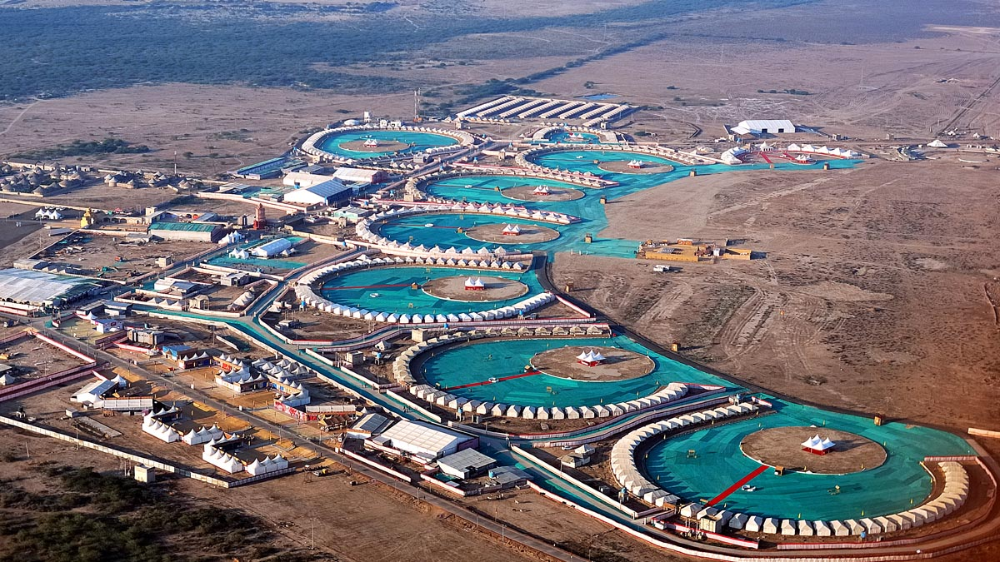

Welcome To Kutch...

Wet and Dry Land Of Gujarat City
Kutch district, officially spelled Kachchh, is a district of Gujarat state in western India, with its headquarters (capital) at Bhuj. Covering an area of 45,674 km2,it is the largest district of India. The area of Kutch District is larger than the entire area of states like Haryana (44,212 km2) and Kerala (38,863 km2). The population of Kutch is about 2,092,371. It has 10 talukas, 939 villages and 6 municipalities. The Kutch district is home to the Kutchi people who speak the Kutchi language.
Kutch literally means something which intermittently becomes wet and dry; a large part of this district is known as Rann of Kutch which is shallow wetland which submerges in water during the rainy season and becomes dry during other seasons. The same word is also used in Sanskrit origin for a tortoise. The Rann is known for its marshy salt flats which become snow white after the shallow water dries up each season before the monsoon rains.
The district is also known for ecologically important Banni grasslands with their seasonal marshy wetlands which form the outer belt of the Rann of Kutch.Kutch District is surrounded by the Gulf of Kutch and the Arabian Sea to the south and west, while the northern and eastern parts are surrounded by the Great and Little Rann (seasonal wetlands) of Kutch. It is also next to the Border with Pakistan. When there were not many dams built on its rivers, the Rann of Kutch remained wetlands for a large part of the year. Even today, the region remains wet for a significant part of year. The district had a population of 2,092,371 as of 2011 census, of which 30% were urban. Motor vehicles registered in Kutch district have a registration number starting with GJ-12. The district is well connected by road, rail and air. There are four airports in the district: Naliya, Anjar, Mundra, and Bhuj. Bhuj and Anjar are well connected with Mumbai airport. Being a border district, Kutch has both an army and an air force base.
Famous Places in Kutch City
- Kalo Dungar
- Mandvi Beach
- Narayan Sarowar
- Rann Of Kutch
- Kutch Fossil Park
- Bhujio Hill
Kutch City Famous Food Item
- Dabeli
- Pohas
- Sev Khaman
- Moong Bhajiya
- Adadiya
- Odho
© Copyright Reserved
Go To Main Page